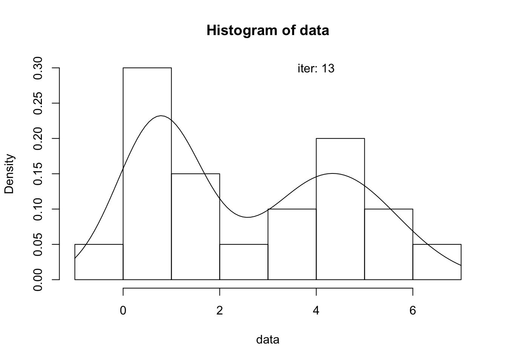
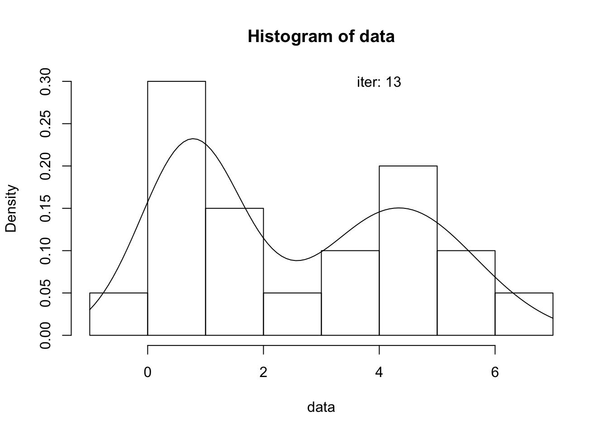

Numerical methods for estimation
Wouter van Amsterdam
2018-02-14
Last updated: 2018-02-14
Code version: 7d55e1e
Intro
Tutor: Rene Eijkemans
Overview
Likelihood
- maximum likelihood principle
- parameter estimation
- inference on model parameters
Numerical methods for ML parameter estimation
- root finding of score equations
- direct optimization of the likelihood
Methods for complicated likelihoods
- EM algorithm
- MCMC approach
Likelihood approach
Probability of finding the data we have, given the model It is reversed probability theory
Parameter estimation -> solve score equations (= first derivatives)
Hessian matrix -> Fisher information (needs to be positive definite) Covariance matrix and tandard error (se)
\[L(\theta) = \prod_i^n{f(x_i|\theta)}\]
\(f(x_i|\theta)\) is probability of finding an observation, given the model
Usually: take the log. Briggs: 1600s. Converts products to sums.
Fisher’s information is negative Hessian Inverse of negative Hessian gives covariance matrix
(high covariance will result in lower information)
When solving equations will not work, use direct maximization of the likelihood (optimization methods)
Numerical root finding
Bracketing methods (search within 2 limits)
- Bisection and Brent’s methods (
uniroot) - Slow but guaranteed convergence
Gradient methods (direct optimization)
- Newton Raphson and variants
- More rapid, but not guaranteed convergence
- Not dealt wih in the course
Unimodal = only 1 maximum
Bisection method
Take a continous function, and two points \(a\) and \(b\) for which \(f(x)\) has opposite sign.
Take midpoint \(m\) of \(a\) and \(b\). Evaluate sign of function there.
When sign \(f(a)\) and \(f(m)\) are opposite, replace interval by \(a,m\). Otherwise, replace with \(b,m\).
Iterate, stop when precision is reached.
Guaranteed to converge, at a linear rate
With code
f <- function(y, a, n) {
a^2 + y^2 + 2*a*y/(n-1) - (n-2)
}Probram bisection method
a <- .5
n <- 20
y0 <- 0
y1 <- n
# solve iteratively
max_iteration <- 1000
it <- 0
eps <- .Machine$double.eps^.25
y <- seq(y0, y1, length.out = 3)
fy <- f(y, a, n)
if (fy[1]*fy[3] > 0) stop("provide y0 and y1 such that the signs of f(y) are
different")
while(it < 1000 && abs(fy[2]) > eps) {
it <- it + 1
if (fy[1]*fy[2] < 0) {
y[3] <- y[2]
fy[3] <- fy[2]
} else {
y[1] <- y[2]
fy[1] <- fy[2]
}
y[2] <- (y[1] + y[3]) / 2
fy[2] <- f(y[2], a, n)
}
it[1] 19y[1] 4.186821 4.186840 4.186859fy[1] -1.710497e-04 -1.033096e-05 1.503885e-04ys <- seq(y0, y1, length.out = 1000)
plot(ys, f(ys, a, n))
abline(h = 0, lty = 2)Stopping criteria can be vertical or horizontal
- function close enough to 0
- differences in estimates close enough to each other
Brent’s method
Use 3 points (or 2 points and the midpoint)
- Fit quadratic function through the 3 points {(a,f(a)), (b,f(b)), (c,f(c))}
- Find roots of this function
Replace values of a, b, or c, depending on the sign of \(f(x)\)
Guaranteed convergence, usually faster than bisection
Program Brents method
f <- function(y, a, n) {
a^2 + y^2 + 2*a*y/(n-1) - (n-2)
}
a <- .5
n <- 20
y0 <- 0
y1 <- n
maxit <- 1000
uniroot(function(x) f(x, a, n), interval = c(y0, y1))$root
[1] 4.18682
$f.root
[1] -0.0001757371
$iter
[1] 9
$init.it
[1] NA
$estim.prec
[1] 6.103516e-05uniroot(function(x) f(x, a, n), interval = c(y0, -y1))$root
[1] -4.239451
$f.root
[1] -0.0001818414
$iter
[1] 9
$init.it
[1] NA
$estim.prec
[1] 6.103516e-05Make a function to fit a quadratic function to three points
require(matlib)
x <- c(0, 1, 2)
y <- c(-1, 2, 1)
A <- matrix(c(
x^2, x, rep(1, 3)
), byrow = F, nrow = 3)
A [,1] [,2] [,3]
[1,] 0 0 1
[2,] 1 1 1
[3,] 4 2 1b <- y
colnames(A) <- c("a", "b", "c")
showEqn(A, b)0*x1 + 0*x2 + 1*x3 = -1
1*x1 + 1*x2 + 1*x3 = 2
4*x1 + 2*x2 + 1*x3 = 1 solve(A, b) a b c
-2 5 -1 find_parabola <- function(x, y) {
if (length(x) != 3 | length(y) != 3) stop("please provide 3 x and y values")
A <- matrix(c(
x^2, x, rep(1,3)
), nrow = 3, byrow = F)
b <- y
solve(A, b)
}
find_parabola(x, y)[1] -2 5 -1Make function to find roots for parabola
parabola_roots <- function(a, b, c) {
d <- b^2 - 4*a*c
if (d < 0) {
warning("no roots")
return(NA)
}
c((-b - sqrt(d))/(2*a), (-b + sqrt(d))/(2*a))
}Implement Brent solver
f <- function(y, a, n) {
a^2 + y^2 + 2*a*y/(n-1) - (n-2)
}
a <- .5
n <- 20
y0 <- 0
y1 <- n
maxit <- 1000
it <- 0
y <- seq(y0, y1, length.out = 3)
fy <- f(y, a, n)
while (it < maxit) {
it <- it + 1
# fit parabola through supplied points
parabola <- find_parabola(y, fy)
# find root of parabola
roots <- parabola_roots(parabola[1], parabola[2], parabola[3])
root <- roots[roots > y[1] & roots < y[3]]
# check if only a single root is within the interval
if (length(root) > 1) stop("provide starting points with opposite sign")
}Optimization mothods for ML parameter estimation
Problems with root finding
- derivatives of likelihood may not exist, or only in part of the parameter space
- Maximum likelihood may lie at boundary of parameter space, (e.g. Variance estimates in Mixed effects models, may be at 0)
- Difficult in higher dimensions
Direct maximization may be better
in R
1 dimension:
nlm, Newton type, fast convergence, not gauranteedoptimize, like Brent’s method, slower but more robust
Multidimensional: optim
- Nelder Mead: search with fixed steps uphill, without gradient information, guaranteed to find an optimal solution; with some adaptation on step size; (amoebe)
- Quasi Newton: uses gradient (steepness) and curvature information; can overshoot;
- Conjugated gradients: clever use of only gradients, to approximate the curvature by keeping track of gradients
For ML estimation, R has special stats4::mle function, uses optim function internally
Example exponential distribution
Survival with no censoring.
Survival function: \(s(y) = e^{-\theta y}\)
Density function
\[f(y) = \theta e^{-\theta y}\]
\[l(\theta) = \sum_i{\log(\theta e^{-\theta y_i})}\]
Solve analytically will give
\[\hat{\theta} = \frac{n}{\sum{y_i}}\]
Which is the incidence density
To use mle, we need to define a function for the negative log lokelihood
formals will return default values of a function
################################################################################
## optimization example (Example 11.10)
################################################################################
## ML estimation as in Example 11.10 is done using function mle from the stats4 library
## the example is fitting an exponential distribution to a sample of size 2.
## the observed sample:
y <- c(0.04304550,0.50263474)
## function for the minus log likelihood
mlogL <- function(theta=1){
#minus logliklihood of exp. density
return(-sum(log(theta)-theta*y))
}
mlogL(1)[1] 0.5456802mlogL(1.5)[1] 0.007590144library(stats4)
fit <- mle(mlogL)
summary(fit)Maximum likelihood estimation
Call:
mle(minuslogl = mlogL)
Coefficients:
Estimate Std. Error
theta 3.66515 2.591652
-2 log L: -1.195477 ## note that the result contains not only the ML parameter estimate, but also an estimate
## of the standard error
## We can get the covariance (matrix) by
vcov(fit) theta
theta 6.716662sqrt(diag(vcov(fit))) #standard error of the estimate theta
2.591652 # we can get details of the fitting by:
fit@details$par
theta
3.66515
$value
[1] -0.5977386
$counts
function gradient
13 9
$convergence
[1] 0
$message
NULL
$hessian
theta
theta 0.1488835Complicated likelihoods
Example of complicated likelihoods
- Mixture model: likelihood is combination of 2 (simple) distributions; probability to be in 1 or the other is unobservable (latent class)
- Missing data or measurement error models: likelihood contains unobserved values; latent factors
- Survival model with censoring: likelihood contribution of censored data may be analytically intractable
- Non-linear mixed model: likelihood conaints expectation of random effect (distribution); We only estimate random effect distribution, not all individual random effects. Integral over random effect distribution, analytical integral does not exist
Answer: split likelihood in parts
Expectation Maximization (EM): suited for problems with latent factors. (e.g. mixed distributions with latent factors, censored survival, missing data (iterative missing prediction, starting with initial parameters, fit model, re-predict missing prediction, re-fit, re-predict, iterate)) Markov Chain Monte Carlo (MCMC): generally for difficult likelihood problems (using Bayesian framework); use (uninformative) prior distribution
Expectation maximization
Slow algorithm. Requires knowledge of the distribution; You require an expected value for the missing (/ latent) values
################################################################################
## EM algoritm: censored survival
################################################################################
## create a sample of censored exponentially distributed survival times
set.seed(52934867)
survtime <- rexp(1000,rate=0.5)
censtime <- rexp(1000,rate=0.2)
y <- ifelse(survtime < censtime,survtime,censtime)
d <- ifelse(survtime < censtime,1,0)
summary(y) Min. 1st Qu. Median Mean 3rd Qu. Max.
0.000476 0.419751 0.917144 1.381938 1.851822 11.780986 table(d)d
0 1
298 702 # Kaplan Meier estimate of the survival curve:
require(survival)
KM <- survfit(Surv(y,d)~1)
plot(KM,xlab="Time",ylab="Proportion surviving")## analytical estimate of the rate:
sum(d)/sum(y) # = events / person-time; which is valid for censored data[1] 0.5079823# Now use the EM algorithm
N <- 100 #max number of iterations
theta <- 1 #initial guesses for theta (=rate)
theta.old <- theta #set old par to the current inital guess, needed further down
tol <- .Machine$double.eps^0.5 #set tolerance (=precision)
## create a matrix that will store the iteration history of the parameters
theta.mat <- matrix(NA,nrow=N,ncol=1)
theta.mat[1,] <- theta #fill the first element with the initial guess
## the EM iterations:
for (i in 1:N){
#The E step: calculate the expected survival times for censored subjects
#note: the expected (=mean) survival time for an exponential distribution = 1/theta
#censored subjects have already survived until their censoring time y
#because of the memorylessness of the exponential distribution, their expected
#total survival time = y + 1/theta
Etimes <- ifelse(d==0,y+1/theta,y) # y + 1/theta, since E(theta) = 1/theta for exponential distribution
#the M step: compute the new parameter estimate:
# is the mean survival time = 1/theta, the estimate of theta = 1/mean
theta <- 1/mean(Etimes)
theta.mat[i+1,] <- theta
#determine convergence
if (sum(abs(theta-theta.old)/theta.old) < tol) break
theta.old <- theta
}
## final solution:
theta[1] 0.5079823## how many iteration till convergence?
i[1] 16# iteration history:
# theta.mat[1:i,]
# note that the first steps approach the final value very fast, but convergens slows down after thatEM for mixture models
Formalism
\[Y_1 \sim N(\mu_1, \sigma_1^2)\] \[Y_2 \sim N(\mu_2, \sigma_2^2)\] \[Y \sim (1-\Delta)Y_1+\Delta Y_2\]
With \(\Delta \in \{0,1\}\), and \(Pr\{\Delta = 1\} = \pi\)
Likelihood of 5 parameters
Expected value step
Determine a probability density value for group membership \(\Delta_i\), depending on \(y_i\) and \(\pi\). Use this as a weight in the first and second group membership.
From Bayes rule. Probability to be in second group
\[\gamma_i = \frac{\hat{\pi} \phi_{\theta_2}(y_i)}{(1-\hat{\pi})\phi_{\theta_1}(y_i) + \hat{\pi} \phi_{\theta_2}(y_i)}\]
Maximization step
\[\hat{\mu}_1 = \frac{\sum_i{(1-\hat{\gamma}_i)y_i}}{\sum_i{\hat{\gamma}_i}}\]
Etc.
\[\hat{\pi}_i = \frac{1}{N}\sum{\gamma_i}\]
################################################################################
## EM algoritm: mixture example
################################################################################
## the data:
## Source: Hastie, Tibshirani, Friedman: the Elements of Statistical Learning,
## 2nd ed., chapter 8.5
y <- c(-.39,.12,.94,1.67,.76,2.44,3.72,4.28,4.92,5.53,
.06,.48,1.01,.168,1.8,3.25,4.12,4.6,5.28,6.22)
## look at histogram of the data
h <- hist(y,freq=FALSE)
## EM algorithm
N <- 100 ## max number of iterations
## initial guesses for the parameters
mu1 <- 1
var1 <- var(y)/2
mu2 <- 5
var2 <- var(y)/2
p <- 0.5
## concatenate the parameters into one vector par
par <- c(mu1=mu1,var1=var1,mu2=mu2,var2=var2,p=p)
## set old par to the current inital guess, needed further down
par.old <- par
## set tolerance
tol <- .Machine$double.eps^0.25
## create a matrix that will store the iteration history of the parameters
par.mat <- matrix(NA,nrow=N,ncol=5)
par.mat[1,] <- par
## the EM iterations
for (i in 1:N){
## The E step: calculate g, the probability to belong to the second group in the mixture,
## as the expected values for each subject of Delta
p <- par[5]
g <- p*dnorm(y,mean=par[3],sd=sqrt(par[4]))/
((1-p)*dnorm(y,mean=par[1],sd=sqrt(par[2]))+p*dnorm(y,mean=par[3],sd=sqrt(par[4])))
## the M step: compute the new parameter estimates as weighted mean, var and proportion
## using g from the E step as weights
mu1 <-weighted.mean(y,w=1-g)
mu2 <-weighted.mean(y,w=g)
var1 <- sum((1-g)*(y-mu1)^2)/(sum(1-g))
var2 <- sum(g*(y-mu2)^2)/(sum(g))
p <- sum(g)/length(y)
par <- c(mu1,var1,mu2,var2,p)
par.mat[i+1,] <- par
## determine convergence
if (sum(abs(par-par.old)/par.old) < tol) break
par.old <- par
}
## final solution:
par[1] 0.7409840 0.5808704 4.5163394 1.0408867 0.4788731par.mat[1:i,] [,1] [,2] [,3] [,4] [,5]
[1,] 1.0000000 2.2937500 5.000000 2.2937500 0.5000000
[2,] 1.0206618 1.3098706 4.565360 1.2324526 0.4311335
[3,] 0.8951434 0.9059921 4.632636 0.9198693 0.4424775
[4,] 0.8358536 0.7371579 4.630949 0.8575005 0.4513843
[5,] 0.8087638 0.6787595 4.611782 0.8747298 0.4575671
[6,] 0.7935028 0.6531462 4.593785 0.9029619 0.4619123
[7,] 0.7830483 0.6376812 4.579382 0.9277254 0.4651466
[8,] 0.7752075 0.6266462 4.568032 0.9477426 0.4676442
[9,] 0.7690882 0.6182298 4.558994 0.9638410 0.4696190
[10,] 0.7642087 0.6116077 4.551709 0.9768878 0.4712056
[11,] 0.7602632 0.6063016 4.545776 0.9875495 0.4724953
[12,] 0.7570419 0.6019978 4.540907 0.9963221 0.4735523
[13,] 0.7543926 0.5984760 4.536887 1.0035797 0.4744243
[14,] 0.7522020 0.5955754 4.533553 1.0096094 0.4751471
[15,] 0.7503830 0.5931742 4.530778 1.0146358 0.4757485
[16,] 0.7488674 0.5911788 4.528461 1.0188368 0.4762503
[17,] 0.7476014 0.5895154 4.526522 1.0223554 0.4766701
[18,] 0.7465416 0.5881254 4.524897 1.0253074 0.4770220
[19,] 0.7456529 0.5869614 4.523532 1.0277874 0.4773173
[20,] 0.7449066 0.5859851 4.522385 1.0298733 0.4775655
[21,] 0.7442793 0.5851651 4.521420 1.0316291 0.4777743
[22,] 0.7437513 0.5844757 4.520608 1.0331083 0.4779501
[23,] 0.7433067 0.5838955 4.519923 1.0343552 0.4780982
[24,] 0.7429320 0.5834068 4.519345 1.0354068 0.4782231
[25,] 0.7426161 0.5829950 4.518858 1.0362940 0.4783284
[26,] 0.7423496 0.5826478 4.518447 1.0370429 0.4784173
[27,] 0.7421247 0.5823549 4.518101 1.0376751 0.4784923
[28,] 0.7419349 0.5821077 4.517808 1.0382090 0.4785556
[29,] 0.7417746 0.5818990 4.517560 1.0386600 0.4786091
[30,] 0.7416393 0.5817228 4.517351 1.0390410 0.4786543
[31,] 0.7415249 0.5815740 4.517175 1.0393629 0.4786924
[32,] 0.7414283 0.5814483 4.517026 1.0396348 0.4787247
[33,] 0.7413467 0.5813422 4.516900 1.0398647 0.4787519
[34,] 0.7412777 0.5812524 4.516793 1.0400590 0.4787750
[35,] 0.7412195 0.5811766 4.516703 1.0402232 0.4787944
[36,] 0.7411702 0.5811125 4.516627 1.0403620 0.4788109
[37,] 0.7411285 0.5810584 4.516563 1.0404793 0.4788248
[38,] 0.7410933 0.5810126 4.516508 1.0405785 0.4788365
[39,] 0.7410636 0.5809739 4.516462 1.0406623 0.4788465
[40,] 0.7410384 0.5809412 4.516424 1.0407332 0.4788549
[41,] 0.7410172 0.5809135 4.516391 1.0407932 0.4788620
[42,] 0.7409992 0.5808902 4.516363 1.0408438 0.4788680## how many iterations till convergence?
i[1] 42## Superpose plot of fitted mixture on histogram
yrange <- -1+(1:100)/100*8
lines(yrange,(1-p)*dnorm(yrange,mean=mu1,sd=sqrt(var1))+p*dnorm(yrange,mean=mu2,sd=sqrt(var2)))Look at conversion of with log-likelihood for each step
## see how fast the iterations converged
## compute the loglikelihood after each iteration, using par.mat
loglik.iter <- apply(par.mat,MARGIN=1,FUN=function(pa){
p <- pa[5]
sum(log((1-p)*dnorm(y,mean=pa[1],sd=sqrt(pa[2]))+p*dnorm(y,mean=pa[3],sd=sqrt(pa[4]))))
})
plot(0:20,loglik.iter[1:(20+1)],type="l")Now with MLE
## this can also be done by the mle function
y <- matrix(c(-.39,.12,.94,1.67,.76,2.44,3.72,4.28,4.92,5.53,
.06,.48,1.01,.168,1.8,3.25,4.12,4.6,5.28,6.22),ncol=1)
mlogL <- function(p=0.5,m1=1,v1=1,m2=5,v2=1){
#minus logliklihood of mixturedensity
return(-sum(log((1-p)*dnorm(y,mean=m1, sd=sqrt(v1))+p*dnorm(y,mean=m2, sd=sqrt(v2)))))
}
mlogL()[1] 39.63144mle_fit <- stats4::mle(mlogL)Warning in log((1 - p) * dnorm(y, mean = m1, sd = sqrt(v1)) + p *
dnorm(y, : NaNs produced
Warning in log((1 - p) * dnorm(y, mean = m1, sd = sqrt(v1)) + p *
dnorm(y, : NaNs producedWarning in sqrt(v1): NaNs producedprint(mle_fit)
Call:
stats4::mle(minuslogl = mlogL)
Coefficients:
p m1 v1 m2 v2
0.4788994 0.7409023 0.5807666 4.5162144 1.0410948 summary(mle_fit)Maximum likelihood estimation
Call:
stats4::mle(minuslogl = mlogL)
Coefficients:
Estimate Std. Error
p 0.4788994 0.1342774
m1 0.7409023 0.3257030
v1 0.5807666 0.3919844
m2 4.5162144 0.4776201
v2 1.0410948 0.7971774
-2 log L: 76.89161 vcov(mle_fit) p m1 v1 m2 v2
p 0.01803043 -0.01662912 -0.02159195 -0.02568018 0.04679375
m1 -0.01662912 0.10608243 0.06626607 0.07629859 -0.13729916
v1 -0.02159195 0.06626607 0.15365181 0.09811164 -0.17418167
m2 -0.02568018 0.07629859 0.09811164 0.22812093 -0.21949520
v2 0.04679375 -0.13729916 -0.17418167 -0.21949520 0.63549184xpts <- seq(from=1,to=6,length.out=100)
ypts <- seq(from=40,to=100,length.out=100)
## now programmed more generally, defining separate functions for the
# Estep and the Mstep.
# In addition, plots per iteration and animation are used to illustrate
# the resulting fits of the iterative process
#function E step:
# calculates the conditional probabilities for the latent variable, g, the
# probability to be in class 2, given the data value y.
# Here, it is more convenient to have the paramters in a list, rather than a
# vector
# Output Value: vector with the individual probabilities (=g)
E.step <- function(theta,y){
g <- with(theta, p * dnorm(y,mean=mu2,sd=sigma2) /
((1-p) * dnorm(y,mean=mu1,sd=sigma1) + p * dnorm(y,mean=mu2,sd=sigma2) ) )
g
}
#function M step:
# calculates the updated parameter estimates by weighting with g from the Estep
# value: list of updated parameter values
M.step <- function(g,y)
list(
p= mean(g),
mu1= weighted.mean(y,w=1-g),
mu2= weighted.mean(y,w=g),
sigma1= sqrt(cov.wt(matrix(y,ncol=1),wt=1-g)$cov),
sigma2= sqrt(cov.wt(matrix(y,ncol=1),wt=g)$cov)
)
#function plot.em
# plots the model fit from the list theta
plot.em <- function(theta,data){
histdata <- hist(data,freq=FALSE) # plot histogram and store the key data
datarange <- seq(min(histdata$breaks), # sequence of 100 values for plotting
max(histdata$breaks), # the model curve on the range of the
length.out = 100) # histogram
modelcurve <- with(theta,(1-p)*dnorm(datarange,mean=mu1,sd=sigma1)+
p*dnorm(datarange,mean=mu2,sd=sigma2))
lines(datarange,modelcurve)
}
#initial parameter estimates, in a list
theta0 <- list(
p=0.5,
mu1=2,
mu2=4,
sigma1=sqrt(var(y)),
sigma2=sqrt(var(y))
)
library(animation) # load libary to animate plots
iterMax <- 30 ## max number of iterations
iter <- 1
theta <- theta0 # set current parameters equal to the initial parameters
# create empty matrix to contain the parameter estimates
theta.mat <- matrix(NA,nrow=iterMax,ncol=length(theta))
theta.mat[1,] <- unlist(theta) # fill the first row
#run EM and plot per iteration, simultaneously recording it for animation lateron
par(bg = "white") # ensure the background color is white
ani.record(reset = TRUE) # clear history before animation recording
for (iter in 2:iterMax){
g <- E.step(theta,y) # E step
theta <- M.step(g,y) # M step and storing new parameter values
theta.mat[iter,] <- unlist(theta)
plot.em(theta,data=y)
text(x=4,y=0.3,paste('iter:',iter))
ani.record() # record the current graphics frame
} 

## now replay it, with half a second pauses between frames
oopts <- ani.options(interval = 0.5)
ani.replay()With Old Faithful data
par(mfrow=c(1,1))
## bivariate normal mixture: Old Faithful data
#load library for multivariate normal
library(mvtnorm)
#load Old Faithful data frame
data(faithful)
plot(faithful)#E step: calculates conditional probabilities for g
E.step <- function(theta,data)
with(theta, p * dmvnorm(data,mean=mu2,sigma=sigma2)/
((1-p) * dmvnorm(data,mean=mu1,sigma=sigma1) +
p * dmvnorm(data,mean=mu2,sigma=sigma2))
)
#M step: calculates the parameter estimates weighted by g from the Estep
M.step <- function(g,data) list(
p= mean(g),
mu1= apply(data,2,weighted.mean,1-g),
mu2= apply(data,2,weighted.mean,g),
sigma1= cov.wt(data,1-g)$cov,
sigma2= cov.wt(data,g)$cov)
#function to plot current data and contourplot of the bivariate mixture distribution
plot.em.contour <- function(theta,data){
#setup grid for plotting
xpts <- seq(from=min(data[[1]]),to=max(data[[1]]),length.out=100)
ypts <- seq(from=min(data[[2]]),to=max(data[[2]]),length.out=100)
# compute the bivariate density values of the model specified in theata,
# on the xy grid just defined
mixture.contour <- outer(xpts,ypts,function(x,y) with(theta,
(1-p)*dmvnorm(cbind(x,y),mean=mu1,sigma=sigma1) + p*dmvnorm(cbind(x,y),mean=mu2,sigma=sigma2)
))
# plot the contourplot
contour(xpts,ypts,mixture.contour,nlevels=6,drawlabel=FALSE,col="red",xlab="Eruption time (mins)",ylab="Waiting time (mins)",main="Waiting time vs Eruption time of the Old Faithful geyser")
# now add the data points to the plot:
points(data)
}
#initial parameter estimates (chosen to be deliberately bad)
theta0 <- list(
p=0.5,
mu1=c(2.8,75),
mu2=c(3.6,58),
sigma1=matrix(c(0.8,7,7,70),ncol=2),
sigma2=matrix(c(0.8,7,7,70),ncol=2)
)
iterMax <- 30 ## max number of iterations
iter <- 1
theta <- theta0 # set current parameters equal to the initial parameters
#run EM and plot per iteration, simultaneously recording it for animation lateron
par(bg = "white") # ensure the background color is white
ani.record(reset = TRUE) # clear history before animation recording
for (iter in 2:iterMax){
g <- E.step(theta,faithful)
theta <- M.step(g,faithful)
plot.em.contour(theta,data=faithful)
text(x=2,y=90,paste('iter:',iter))
ani.record() # record the current graphics frame
}


## now replay it, with half a second pauses between frames
oopts <- ani.options(interval = 0.5)
ani.replay()Markov Chain Monte Carlo approach
When calculating conditional expectation in EM is too complicated
Dangerous: always give results, even if you don’t think about your problem and data
- Monte Carlo = random sampling
Sequence can be used to sample whole distribution (of parameters)
Markov chain has no memory. Each step in chain, only depends on current state.
Goes through dimensions, step by step
In a Bayesian model:
- one postulates prior distributions for the values of the model parameters
- given the prio parameter distributions, the ilkelihood of the data is calculated
- from prior and likelihood, using Bayes Theorem, the posterior distribution of the parameters is obtained.
Using ‘flat’ or ‘uninformative’ priors, maximum likelihood equivalent estimates can also be obtained. (posterior does not depend on belief on prior)
Gibbs sampler: joint distribution as a product of all conditional distributions
Metropolis-Hastings algorithm: draw sample from known distribution, and a decision rule to include or reject the sample (based on another draw from the known distribution)
Gibbs sampler
\[f(x_1, x_2) = g(x_2|x_1)h(x_1)\]
Random sample \(x_1\) from it’s distribution. Then, given this value, draw \(x_2\) from it’s conditional distribution.
Say we want \(K\) samples of \(X = (x_1, ..., x_p)\) from a joint distribution $f(x_1, …,x_p)
Denote the \(i\)-th sample by \(X^{(i)} = (x_1^{(i)}, ..., x_p^{(i)})\)
- begin with some initial value \(X^{(0)}\)
- for each sample \(i\), get variable \(j\) with:
\[f(x_j|x_1^{(i)}, ..., x_{j-1}^{(i)}, x_{j+1}^{(i-1)}, ..., x_{p}^{(i-1)})\]
Some distributions
For rate in Poisson, prior gamma(a,b), then posterior gamma(a + sum(y), b + n)
Special case of Gamma: chisq(v) = gamma(1/2, v/2); is convenient, only has 1 parameter.
Instead of specifying a fixed value for v, one can incorporate uncertainty by using a hyper-prior for v
If the sampling distribution for g is gamma(a, b) with a known, and the prior distribution on b is gamma(a0, b0), the posterior distribution for b is gamma(a0 + n, b0 + sum(xi))
With uniform prior for step in rate:
\[L = e^{k(\lambda - \mu)}(\frac{\lambda}{\mu})^{S_k}\]
With \(S_k = \sum_{i=1}^k{y_i}\)
Requires normalization to be a proper distribution function
Poor mixing: parameter updates not randomly drawn, but incremental, because of correlations. You can inspect this in the traceplot. This brakes the assumption of the Markov chain of independence of states.
In Bayesian terms: percentiles of estimated parameters gives (e.g. 95%) credible intervals
Checking convergence
- look for auto-correlation (lag-plots, lag-1, lag-2, lag-3, …)
- inspect traceplots
Session information
sessionInfo()R version 3.4.3 (2017-11-30)
Platform: x86_64-apple-darwin15.6.0 (64-bit)
Running under: macOS Sierra 10.12.6
Matrix products: default
BLAS: /Library/Frameworks/R.framework/Versions/3.4/Resources/lib/libRblas.0.dylib
LAPACK: /Library/Frameworks/R.framework/Versions/3.4/Resources/lib/libRlapack.dylib
locale:
[1] en_US.UTF-8/en_US.UTF-8/en_US.UTF-8/C/en_US.UTF-8/en_US.UTF-8
attached base packages:
[1] stats4 stats graphics grDevices utils datasets methods
[8] base
other attached packages:
[1] mvtnorm_1.0-7 animation_2.5 survival_2.41-3 matlib_0.8.1
loaded via a namespace (and not attached):
[1] Rcpp_0.12.14 compiler_3.4.3 nloptr_1.0.4
[4] git2r_0.20.0 tools_3.4.3 digest_0.6.14
[7] lme4_1.1-15 jsonlite_1.5 evaluate_0.10.1
[10] nlme_3.1-131 lattice_0.20-35 mgcv_1.8-22
[13] Matrix_1.2-12 shiny_1.0.5 crosstalk_1.0.0
[16] yaml_2.1.16 parallel_3.4.3 SparseM_1.77
[19] stringr_1.2.0 knitr_1.18 htmlwidgets_0.9
[22] MatrixModels_0.4-1 rprojroot_1.2 nnet_7.3-12
[25] grid_3.4.3 R6_2.2.2 rgl_0.99.9
[28] rmarkdown_1.8 minqa_1.2.4 car_2.1-6
[31] magrittr_1.5 backports_1.1.2 htmltools_0.3.6
[34] MASS_7.3-47 splines_3.4.3 pbkrtest_0.4-7
[37] mime_0.5 xtable_1.8-2 httpuv_1.3.5
[40] quantreg_5.34 stringi_1.1.6 This R Markdown site was created with workflowr